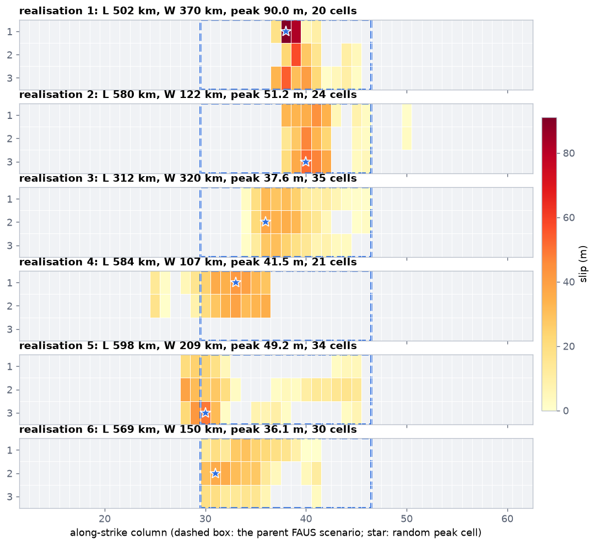
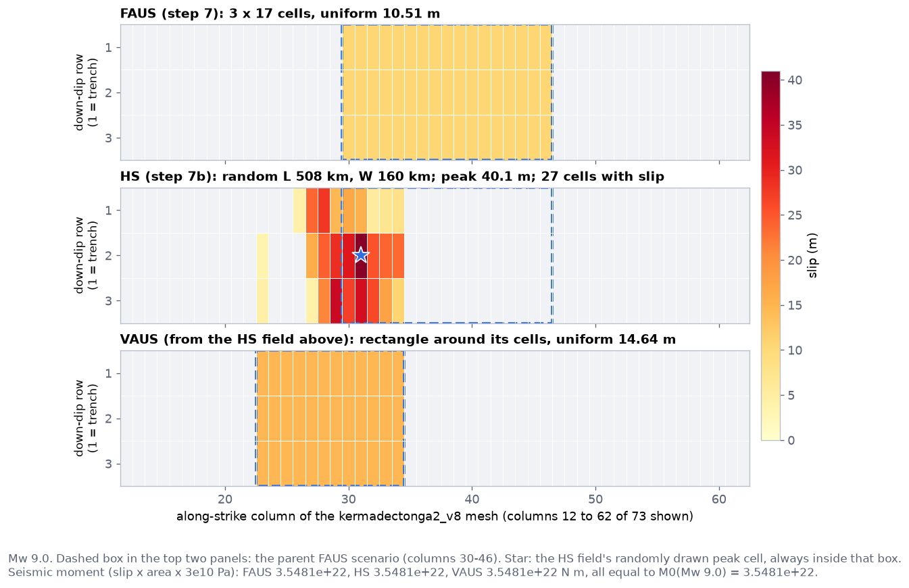
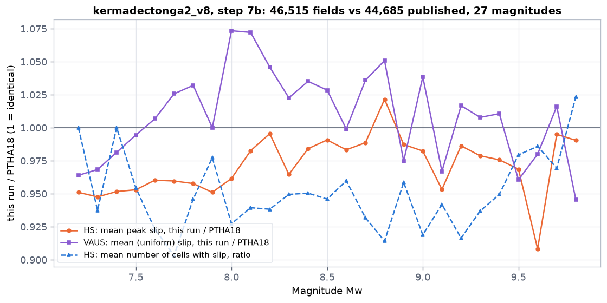

7b. HS and VAUS slip
Step 7's scenarios slip by the same amount everywhere. Real earthquakes do not: slip concentrates in patches. PTHA18 therefore publishes three kinds of rupture for every scenario. Step 7b (optional) makes the other two, heterogeneous slip (HS) and variable-area uniform slip (VAUS), with PTHA18's own method. It never changes a single rate.
At a glance
One FAUS scenario from step 7 is the parent. Step 7b draws 15 random HS fields from it, and turns each HS field into one VAUS field. All three have the same magnitude, so the same seismic moment. Only FAUS feeds the logic tree.
outputs/hs_slip_fields/ and outputs/vaus_slip_fields/ and read only by the report (step 9). Colours in the cells are slip (darker = more).inputs/input_<zone>_scratch.json (geometry and magnitudes), the contour shapefile it names, and the scaling relation and rigidity written in it by step 6. Nothing of PTHA18outputs/hs_slip_fields/summary.csv, outputs/vaus_slip_fields/summary.csv, and comparison_features.npz in each folder (for step 8's comparison with PTHA18)step_total.py runs step 7b unless you pass --skip-hs; if it fails, step_total.py reports it and carries on (it is optional). Among the examples, step 7b has been run on kermadectonga2_v8 (log: run_final.log). Step 7 deletes outputs/ as a whole, so re-run step 7b after every step 7..venv/Scripts/python.exe kermadectonga2_v9/steps/step7b_stochastic_slip.py # full volume, as rptha .venv/Scripts/python.exe kermadectonga2_v9/steps/step7b_stochastic_slip.py --max-placements-per-mw 20 --max-fields-per-mw 300 # quick .venv/Scripts/python.exe kermadectonga2_v9/steps/step8_official.py --download-hs # then: fetch PTHA18's catalogues and compare
- Redraw until every edge has slip. rptha redraws a field until the first and last row and column of its window all have some slip (
sffm_fit_simulate_earthquake.R1347-1364); v9 drew once, and about 12% of fields had an empty edge, which made their VAUS rectangle smaller and its slip higher. - Random L, W, kcx, kcy clipped at 2 standard deviations, rptha's default (
clip_random_parameters_at_2sd = TRUE, lines 1119, 1199-1201); v9 did not clip, so about 15% of fields had at least one draw beyond 2 sd. - Independent random streams. The old seed repeated across magnitudes (placement p at Mw m had the seed of placement p+10 at Mw m-0.1); every (magnitude, placement, realisation) now has its own stream.
- Realisations per placement: rptha's
max(15, ceiling(200 / n))for every placement (make_all_earthquake_events.R186-194); v9 topped up to exactly 200 per magnitude.
kermadectonga2_v8's, made before these fixes; a new step 7b run gives statistically similar but not identical fields.FAUS: fixed area, uniform slip
FAUS is what step 7 builds: for each magnitude, a rectangle of cells whose size follows the Strasser scaling relation, placed everywhere it fits, with one slip value everywhere. The slip is set by the seismic moment: M0 = 101.5 Mw + 9.05 N m = μ x area x slip, with the rigidity μ = 3e10 Pa.
- Why uniform: it makes the moment balance and the edge correction simple and exact, and it is what PTHA18 uses for its logic tree (LEVELs 0-5). Every rate in the package is a FAUS rate.
- Why it is not enough for tsunamis: a real Mw 9 earthquake can have tens of metres of slip in one patch and little elsewhere. A concentrated patch near the trench makes a bigger, shorter wave than the same moment spread evenly. PTHA18 models tsunamis from all three types for this reason.
Example, kermadectonga2 (the example's mesh, 73 x 3 cells): a Mw 9.0 FAUS scenario is 17 x 3 cells with about 10 m of slip everywhere (the top panel of the figure in VAUS).
HS: heterogeneous slip
An HS field keeps the magnitude of its parent FAUS scenario but redistributes the slip into patches ("asperities"). PTHA18 makes them with the SFFM generator of rptha (synthetic finite-fault model, file sffm_fit_simulate_earthquake.R), the SNCF method of Davies et al. (2015). Step 7b uses a Python port of it, pyptha_v12/stochastic_slip.py.
The idea of SFFM in plain words
Look at a slip map as a picture. A smooth picture has only slow changes ("low wavenumbers"); a speckled one has fast changes too ("high wavenumbers"). Davies et al. (2015) measured, on real earthquakes' slip maps, how much of each wavenumber there is: the amplitude falls off beyond a corner wavenumber (kcx along strike, kcy down dip), and bigger earthquakes have smaller corner wavenumbers (their patches are larger). SFFM makes a random picture with exactly that amount of each wavenumber: the amounts are fixed, only the positions of the bumps (the phases) are random.
sffm_simulate(), a line-by-line port of rptha's function of the same name; step 7 is done in the step 7b loop. The optional sub-sampling refinement of R's sffm_simulate is not ported (documented in the module's docstring).Where in the code: pyptha_v12/stochastic_slip.py sffm_simulate(), sffm_get_numerical_wavenumbers(), sffm_recentre_slip(), SFFMParameters.spectral_amplitude_fun().
What is random in each HS field
rptha does not reuse one shape per magnitude. Each realisation draws, in this order (step 7b's inner loop):
- A peak cell, uniformly inside the parent FAUS scenario's rectangle (rptha's
vary_peak_slip_location, with the window that rptha's drivermake_all_earthquake_events.Rpasses: the parent's own along-strike and down-dip index range). - A length L and width W, log-normal around Strasser's values for that Mw, with Strasser's own scatter (log10 standard deviation 0.180 for length, 0.173 for width).
- Corner wavenumbers kcx, kcy (per km): log10 kcx = -0.54 Mw + 2.03 + 0.22 e1, log10 kcy = -0.41 Mw + 1.18 + 0.19 e2, where e1, e2 are standard normal numbers with correlation 0.68 (a patchier-than-average field along strike tends to be patchier down dip too). These are rptha's regression coefficients from Davies et al. (2015).
- A footprint of round(L / peak cell length) columns and round(W / peak cell width) rows, at least 1 and at most the whole zone. If W is wider than the zone can hold, on a coin flip the missing width is traded for more length (rptha's
expand_length_if_width_limited = "random"). - Its position: the footprint is placed on the whole zone's mesh so that it contains the peak cell, at a random offset, pushed back inside where it would cross the zone's edge (rptha's
rectangle_on_grid). So an HS field can spill beyond its parent or be much smaller. - SFFM as above, then the exact-moment rescale.
Each realisation has its own NumPy random generator, seeded with 1234 + 1000 x placement + realisation + int(100,000 x Mw), so a re-run gives the same fields. They cannot equal PTHA18's own fields: R and NumPy random numbers differ, and PTHA18's tables do not store the seeds.
Where in the code: templates/step7b_stochastic_slip.py.tmpl main() and rupture_to_template(); pyptha_v12/stochastic_slip.py sffm_make_random_lwkc_function(), rectangle_on_grid().
How many
Step 7b makes 15 HS fields per FAUS scenario, and at least 200 per magnitude (the extra fields for a magnitude with fewer than 14 scenarios are spread round-robin over its scenarios). This is rptha's rule, read off PTHA18's kermadectonga2 catalogue: exactly 15 per scenario at every magnitude from 7.2 to 9.5, and 200 where a magnitude has too few scenarios. --max-placements-per-mw (use only N evenly spaced scenarios per magnitude) and --max-fields-per-mw (scale the count down) make a faster, approximate run. On a large zone the full volume is tens of thousands of fields: on kermadectonga2 it took 1 minute on the machine used for this page. kermadectonga2_v8 (219 cells, 3,075 FAUS scenarios) makes 46,515 HS fields and as many VAUS fields.

figures_src/make_hs_vaus.py with step 7b's recipe, drawn directly for this figure rather than read from step 7b's saved fields.Equal cells assumed (and what v10 changes here)
rptha's SFFM draws a slip field on the grid of cell indices with ONE cell spacing for the whole footprint, the length and width of the peak cell: the footprint is Strasser's length and width divided by that cell's size, and the corner wavenumbers are scaled by it (reg_par = kc x peak cell size in step 7b). On PTHA18's 50 x 50 km meshes every cell is about that size. On a mesh whose cells differ, the slip pattern is stretched or squeezed in km where the cells are larger or smaller than the peak cell: inside a Mw 8.0 rupture the cell length varies up to 2.3 times (90th percentile) on hellenic_west2_v9 and 2.0 on calabria2, against 1.17 on kurilsjapan.
v10 / v10_q do not change the SFFM. With --rupture-size local the FAUS parents (and so the window where each field's peak is drawn) are the cell-by-cell ruptures, the same call step 7 makes. In PTHA18 an HS or VAUS event takes its rate from its parent (compute_rates_all_sources.R, lines 1551 to 1600), so the new parent rates would carry over; this pipeline writes no HS / VAUS rates. Options analysed but not implemented: the same spectrum correlated by real distance on the slab (covariance / Karhunen-Loeve on the cell centroids), or a regular km grid averaged onto the cells. See known limitations.
VAUS: variable area, uniform slip
VAUS is not a third random model. rptha derives each VAUS row from one HS row (make_all_earthquake_events.R, which copies the whole HS table and only rewrites the footprint and the slip). Step 7b does the same, in the same loop iteration, right after generating the HS field:
- Take the smallest rectangle (in along-strike and down-dip index) that contains every cell where the HS field has slip > 0. It can include cells where the HS slip was 0, but only real cells of the mesh.
- Give every cell of that rectangle the same slip: Σ(HS slip x cell area) / Σ(rectangle cell areas). This keeps the HS field's moment, so the magnitude.
- Copy the magnitude, position (
target_lon,target_lat), peak cell and corner wavenumbers from the HS row.
So VAUS is "uniform slip, but on the random area of an HS field": between FAUS (fixed area) and HS (fixed patches) in realism. Its uniform slip is usually larger than the FAUS slip when the HS field was compact, and smaller when it spread.

figures_src/make_hs_vaus.py with step 7b's recipe.Where in the code: templates/step7b_stochastic_slip.py.tmpl, the --- VAUS --- block of main(). A cell of the rectangle without a real unit source is skipped (vaus_sub_block > 0), as R's table filter does.
Comparison with PTHA18
PTHA18 publishes its own HS and VAUS catalogues on NCI: all_stochastic_slip_earthquake_events_<zone>.nc and all_variable_uniform_slip_earthquake_events_<zone>.nc. Step 7b reads none of them: it saves, for each of its fields, the four numbers below (comparison_features.npz). Step 8, the official step, compares those with PTHA18's catalogues when they are in official_ptha_data/public_nc/ (step8_official.py --download-hs fetches them), and writes the result to outputs_official/ptha18_reference/hs_comparison.csv and vaus_comparison.csv. The numbers are the same as comparing the whole fields directly (a test checks it). The share package ships no public_nc/ folder: it is created on the first --download-hs, with the files of that zone only.
For every magnitude, all of this run's fields are compared with all of PTHA18's fields within 0.05 of that magnitude, on four numbers:
| Measure | How it is computed (per field, then averaged) |
|---|---|
| mean peak slip (m) | largest slip of the field. For VAUS, the uniform slip. |
| mean active cells | number of cells with slip > 0 (the footprint size). |
| mean concentration | largest cell's slip / sum of all cells' slip: 1 = everything in one cell. |
| spectral distance | 2D FFT amplitude of the field, averaged in rings of equal wavenumber, normalised to sum 1, resampled to 16 bins; averaged over all fields of each side; then the mean absolute difference between the two sides. 0 = identical average spectra. rptha checks its own generator in a similar way (sffm_slip_goodness_of_fit, mean |FFT(slip)|). |
Where in the code: lib/hs_official_compare.py load_official_hs_events(), official_events_to_grids(), summary_stats(), spectral_signature(), field_features() (step 7b), compare_features(); step 8's compare_hs_vaus() runs it once for HS and once for VAUS. The VAUS comparison is not redundant: it is the only check of the rectangle-and-uniform-slip rule itself.
Two details of the measuresread before judging a number
- VAUS spectral distance is always 0. A uniform field has an FFT amplitude only at wavenumber 0, so its normalised spectrum is (1, 0, 0, ...) on both sides, whatever the size. The VAUS comparison is therefore about slip and footprint size, not about the spectrum.
- Frames differ slightly. PTHA18's fields are cut to the bounding box of their cells with slip; this run's HS fields are kept on the whole footprint rectangle drawn in step 4 of the list above, which can include cells with zero slip. Cell counts are not affected (only cells with slip count), but the concentration and spectrum are computed on slightly different frames.

outputs_official/ptha18_reference/hs_comparison.csv and vaus_comparison.csv. HS peak slip is within -9% to +2% of PTHA18 at every magnitude, the footprint size within -10% to +2%, and the VAUS slip within -5% to +7% (median +1%): the generator reproduces PTHA18's statistics. Made by figures_src/make_hs_vaus.py.Reading the result
| This run | PTHA18 | |
|---|---|---|
| HS fields, all 27 magnitudes (7.2 to 9.8) | 46,515 | 44,685 |
| HS mean peak slip at Mw 9.0 / 8.5 | 44.6 / 18.6 m | 45.4 / 18.8 m |
| HS mean cells with slip at Mw 9.0 / 8.5 | 36.2 / 14.0 | 39.4 / 14.8 |
| VAUS uniform slip at Mw 9.0 / 8.5 | 13.9 / 6.7 m | 13.4 / 6.5 m |
| HS spectral distance, all magnitudes | 0.000 to 0.005 (0 = identical average spectra) | |
The two meshes differ slightly (219 cells against PTHA18's 216, see the example), so small differences in footprint size and slip are expected. PTHA18 has no published HS/VAUS files for zones it never modelled (calabria2, caribbean2, antilles2); the comparison is then skipped and the report says so.
Run for this page with kermadectonga2_v8/steps/step7b_stochastic_slip.py; its log is kermadectonga2_v8/run_step7b.log. Step 7b uses the same mesh as step 7: it reuses step 2's saved grid when its fingerprint matches (log line mesh: reusing step 2's grid) and otherwise rebuilds it with the same settings, including the minimum of 2 rows.
Outputs
outputs/hs_slip_fields/summary.csv and outputs/vaus_slip_fields/summary.csv
One row per field, every field (no sampling). Same columns in both files; the first 10 and the two packed strings follow the columns of PTHA18's own netCDF tables.
| Column | Meaning |
|---|---|
rupture_type | HS or VAUS. |
Mw | Magnitude (2 decimals). |
placement, realisation | Which FAUS scenario of that magnitude (1-based, in step 7's order) and which of its realisations. A VAUS row has the same pair as the HS row it comes from. |
target_lon, target_lat | Position of the parent FAUS scenario: the spherical centroid of its cells (rptha's geomean, averaged as unit vectors). The same for all realisations of one parent. |
peak_slip_downdip_ind, peak_slip_alongstrike_ind | The randomly drawn peak cell (1-based row and column). |
physical_corner_wavenumber_x, _y | kcx, kcy of this realisation, per km. |
n_unit_sources | Cells with slip (HS) or cells of the rectangle (VAUS). |
peak_slip_m | Largest slip (HS) or the uniform slip (VAUS), m. |
total_slip_m | Sum of the cells' slip, m (a convenience number; the moment uses slip x area). |
uniform_slip_m_FAUS_equivalent | The parent FAUS scenario's slip, m. |
event_index_string | The cells, as 1-based cell numbers joined by - with a trailing - (rptha's format, e.g. 1-2-). |
event_slip_string | The slip of each of those cells, 4 significant digits, joined by _ (e.g. 1.476_0.002697_). |
rupture_type,Mw,placement,realisation,target_lon,target_lat,peak_slip_downdip_ind,peak_slip_alongstrike_ind,physical_corner_wavenumber_x,physical_corner_wavenumber_y,n_unit_sources,peak_slip_m,total_slip_m,uniform_slip_m_FAUS_equivalent,event_index_string,event_slip_string HS,7.20,1,1,-173.660215,-14.690528,1,1,0.0230735,0.0378327,2,1.476,1.479,1.479,1-2-,1.476_0.002697_ VAUS,7.20,1,1,-173.660215,-14.690528,1,1,0.0230735,0.0378327,2,0.725,1.451,1.479,1-2-,0.7254_0.7254_
First data rows of kermadectonga2_v8's two files (46,515 fields each): an HS field on cells 1 and 2 with almost all slip on cell 1, and its VAUS field spreading the same moment evenly over both. target_lon is written in -180 to 180.
comparison_features.npz (in each folder)
mw, one value per field, and features, one row per field: peak slip, active cells, concentration and the 16-bin spectrum. Only step 8 uses it.
hs_comparison.csv, vaus_comparison.csv (step 8, in outputs_official/ptha18_reference/)
One row per magnitude: Mw, n_synthetic, n_official, mean_peak_slip_m_synthetic, mean_peak_slip_m_official, mean_active_cells_synthetic, mean_active_cells_official, mean_concentration_synthetic, mean_concentration_official, spectral_distance.
Who reads them
rate_curves.csv, scenario_rates_*.csv, exceedance_rate_percentiles.csv and logic_tree_branches_*.csv are identical with or without step 7b. PTHA18 also gives HS and VAUS scenarios rates, a share of the rate of the FAUS rupture each was drawn from; since v10_q (2026-10-06) step 7b computes them the same way and writes them into the two summary.csv files (they enter nothing in LEVELs 0-5). Only step 9 reads the files, to add an HS/VAUS section to report.html: one row per magnitude (number of fields, mean and largest peak slip), and the comparison tables.Rates of HS and VAUS scenarios (v10_q)
v11: step 7c adds the same for PTHA18's variable shear modulus rates (variable_mu_rate_*, variable_mu_weight_in_family, variable_mu_Mw), with PTHA18's second pair of DART curves; the peak-slip limit is the same. Both rigidities rank the fields by the largest value of event_slip_string, as PTHA18 reads it. What is new in v11.
Port of compute_rates_all_sources.R 1551-1600 (fixed shear modulus) in pyptha_v12/hs_vaus_rates.py. The fields drawn from one FAUS rupture (its family) share that rupture's rate:
- A field whose peak slip is above 7.5 times the scaling relation's mean slip for that Mw (the slip on its median area) gets rate 0 (
config_peak_slip_limit_factor.R). For a VAUS that means an area under 0.13 times the median. - The others are ranked by peak slip in the family, q = rank / (n + 1), and weighted by f(q): PTHA18 fitted f to DART buoy records, one curve for HS (which it found too high-slip: f falls with q) and one for VAUS (too low-slip: f rises up to q about 0.85).
- The weights of a family are divided by their sum, so together the family carries exactly the FAUS rupture's rate.
PTHA18 never published f (peak_slip_quantile_adjustment_factors.csv). Each published family gives linear equations on f's 51 knots, so validation/recover_peak_slip_weights.py recovers it into data/ptha18_peak_slip_quantile_weights.csv: fitted on puysegur2 alone it reproduces every kermadectonga2 HS and VAUS rate to 1e-14, and with the file every published rate of both zones is reproduced to 4e-12, all zero rates included. Columns added to both summary.csv: faus_event_id, above_peak_slip_limit, weight_in_family, rate_mean and the five percentiles (the parent's times the weight). Step 7 must have run first. PTHA18's depth-varying shear modulus rates are not ported.
Where in the code: templates/step9_report.py.tmpl (the STEP 7b block); templates/step_total.py.tmpl (--skip-hs, --download-official-hs-vaus, passed to step 8).